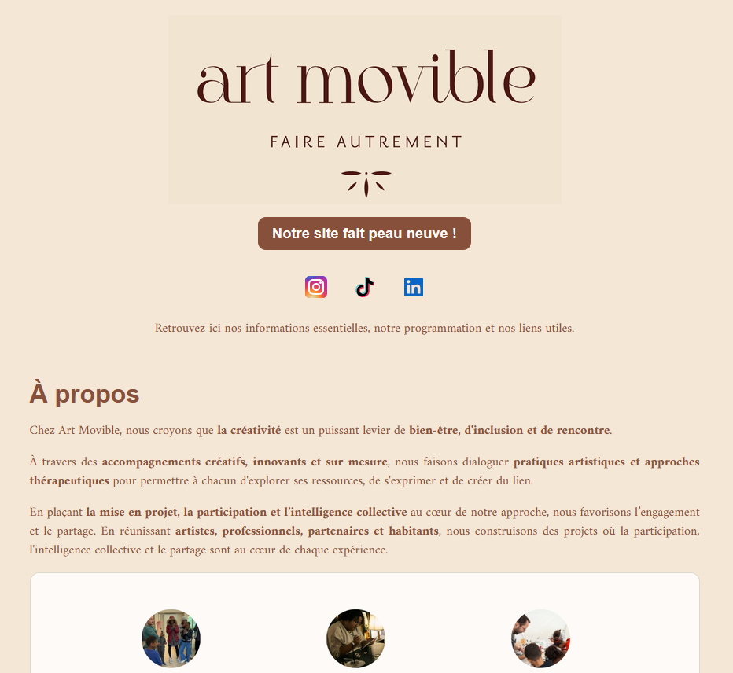

Art Movible

Site vitrine responsive regroupant la présentation de l’association, sa programmation et ses informations utiles.
Structure HTML, mise en forme CSS, intégration des contenus et mise en ligne.
- HTML
- CSS
- GitHub
- Vercel
Ce portfolio rassemble les projets à travers lesquels je développe et mets en pratique mes compétences en développement web.
«Il n'est jamais trop tard pour devenir ce que l'on aurait pu être»
— George Eliot


Site vitrine responsive regroupant la présentation de l’association, sa programmation et ses informations utiles.
Structure HTML, mise en forme CSS, intégration des contenus et mise en ligne.
Mon parcours professionnel s’est construit dans des environnements variés, notamment dans l’animation, la formation, l’encadrement, le management d’équipe et la coordination de projets. Ces expériences m’ont permis de développer mon autonomie, ma capacité d’adaptation, mon sens de l’organisation et du travail en équipe. Aujourd’hui, je fais le choix de me reconvertir dans le développement web et de construire durablement mon parcours professionnel dans ce secteur. J’y retrouve ce qui me motive : comprendre, résoudre des problèmes, créer des solutions concrètes et continuer à apprendre.
Pour échanger au sujet de mon parcours ou de mes projets, vous pouvez me contacter par e-mail.